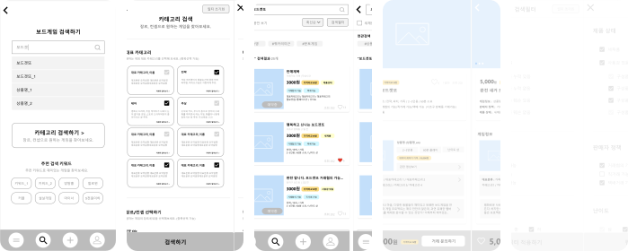
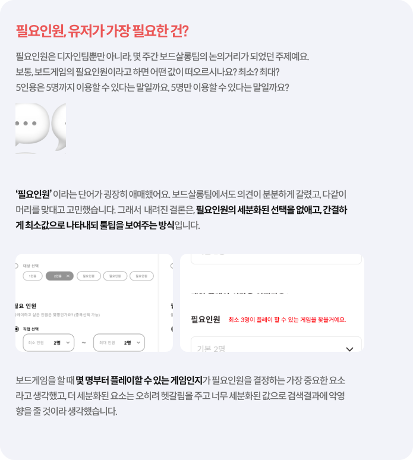

기능 설명
MVP의 가장 중요한 목표 중 하나는 쉬운 보드게임 검색이에요.
구매자는 우리 서비스를 통해 확인 가능한 정보를 최대한 모으고,
중고 보드게임을 검색하고, 필터링하고,
구매할 수 있어요.
이러한 목표를 달성하기 위해 보드살롱에게 정말 도움이 되는 검색기능이 필요했어요.
설문조사를 통해 도출한 보드게임 유저 니즈와 페인포인트를 토대로,
기획단에서 세 가지 기능을
정리해주었어요.
최저가 가격
카테고리
연관검색어 추천
와이어프레임
세 가지 기능을 녹여낸 기획 와이어프레임은 이렇게 진행되었어요.

이 기획 와이어프레임을 토대로, 실제 UI가 들어갈 hi-fi 와이어프레임을 설계했습니다.
먼저 기획 와이어프레임에서 두 가지를 확인했어요.
1
해당 화면에 불필요한 정보가 있는지 확인하기
많은 정보값이 들어있는 기획 와이어프레임에서 실제 디자인을 진행할 와이어프레임으로 변경하면서,
이 정보가 해당 화면에 꼭 들어가야 하는지, 유저가 원하지 않은 정보까지 제공하는 건 아닌지를
먼저 생각했습니다.
2
유저가 기능을 사용할 때 헷갈릴 요소 고려하기
유저가 특정 기능을 사용하고 경험할 때 헷갈릴 요소를 주지 않는 것이 중요하기 때문에, 보드게임의 라이트유저들도 거래 시에 헷갈리지 않도록 명확하게 UX를 기획해야 한다고 생각했어요.

대표적인 세 가지를 제외하고도 여러 요소를 고려하고 기획단과 논의하여, 와이어프레임을 그렸어요.
이후 만들어진 스타일 가이드에 따라 팀원 디자이너께서 UI를 입혀 최종적인 디자인이 나오게 되었습니다.